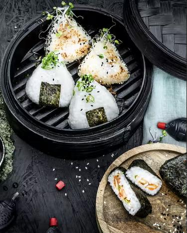

Japanese Onigiri

Description
You might have had Onigiri in the past while visiting your favourite Sushi restaurant.
In this recipe I'm going to show you how to make Onigiri yourself. It's quite easy and rewarding! :)
Ingredients
The rice
- 200g sushi rice
- 250ml water
- 1tsp salt
- 1tbsp rice wine vinegar
- soy sauce (always good to have!)
1st filling
- 1 shallot
- 50g Kimchi
- 20g sesame (white)
- 20g Sesame (black)
2nd filling
- 50g salmon (sushi quality)
- 50g cucumber
- 2 sheets of nori
3rd filling
- 1tbsp sesame oil
- 10g ginger
- 50g chicken breast filet
- 2tbsp teriyaki sauce
- 50g edamame
Instructions
- Wash the rice until the water is clear. Put it into a pot and add some water and salt.
Heat it until the water is cooking and immediately turn it down to a simmer.
Put a lid on the pot and let the rice sit (stir it occasionaly!).
Spread the rice out on a baking tray and marinate it with rice wine vinegar as soon as it stops to give off steam.
- For the first filling wash and dry the shallots before cutting them into little rolls.
Chop up the kimchi and put both the shallots and the kimchi into a bowl.
Give it a good toss!
- For the second filling rinse the salmon with cold water.
Dab it dry with a sheet of kitchen paper.
Slice the salmon into little chunks (think of sushi!).
Peel the cucumber and chop it into little chunks.
- For the third and last filling we will heat up a bit of oil in a pan and add ground ginger.
Rinse the chicken with cold water, dab it dry with a piece of kitchen paper and chop it into little chunks.
Add the chicken to the pan including the teriyaki sauce and edamame.
Stir it up good and fry it for around five minutes (keep stirring!).
- Wet your hands with water, take a bit of our rice and form a light mold so it can hold the fillings.
Take a bit of the desired filling, put it into the mold and roll the rice into a ball, encapsulating the filling inside.
Now shape it into a triangle, put a dash of soy sauce on it and it's ready to be server.
-
If you don't want to eat your Onigiri right away you can wrap them in nori sheets for later.
The nori sheets will make it easier to put two or more Onigiri next to each other since it prevents them from sticking to each other.